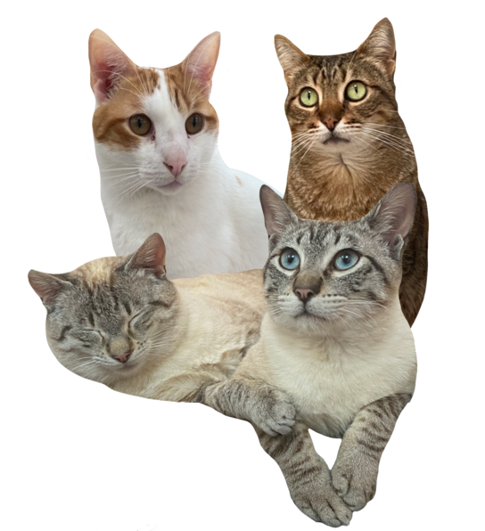

¡Ayudanos a ayudar!
Te damos la bienvenida a la web de Progat Cornellà, una asociación formada por voluntarios que intenta hacer mejor la vida de los felinos de la ciudad de Cornellà de Llobregat. ¡Nunca nos rendimos! Si has llegado hasta aquí, es posible que sea porque nos buscabas para adoptar a uno de nuestros adorables gatos, para ayudarnos con alguna donación o para ser voluntario. Sea como fuere, esperamos que encuentres aquí lo que buscabas. Y, si no lo encuentras, no dudes en llamarnos por teléfono o enviarnos un correo electrónico. Te responderemos tan rápido como podamos.